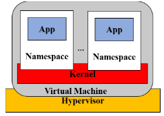
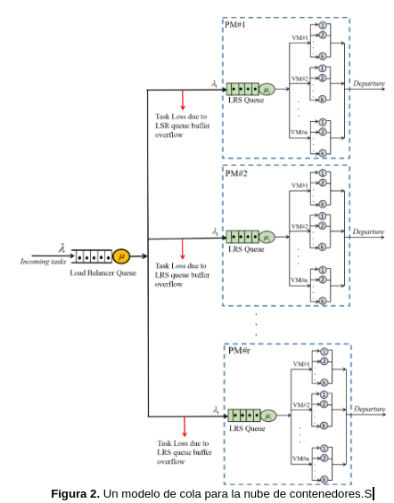
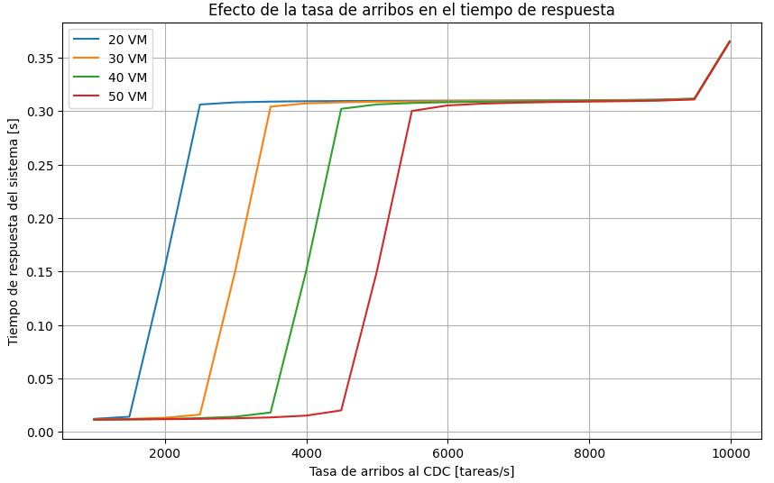
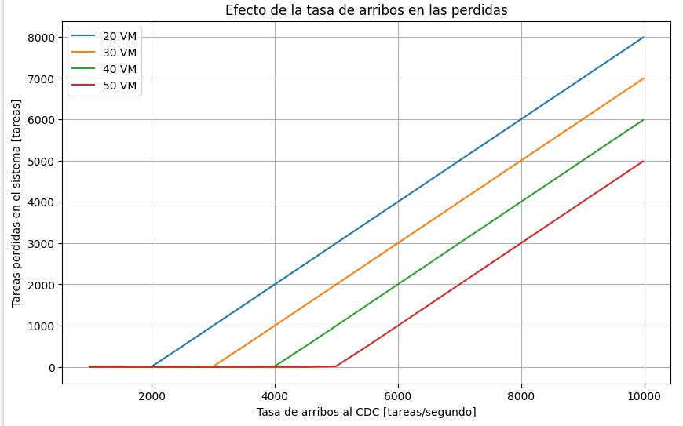
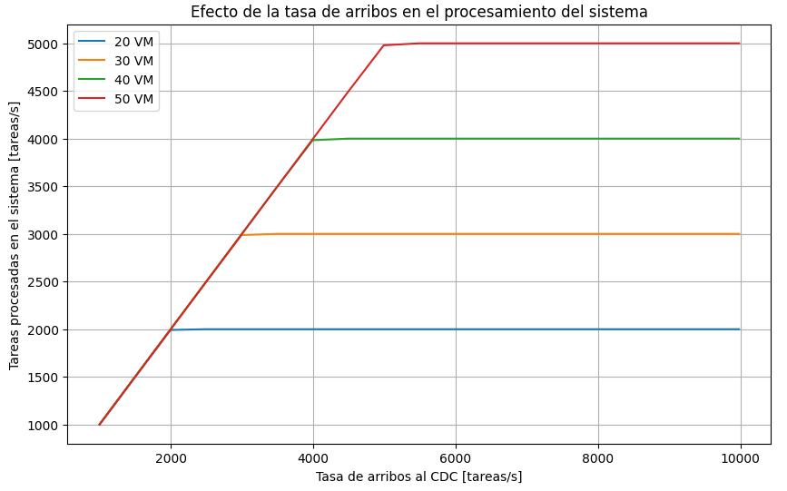
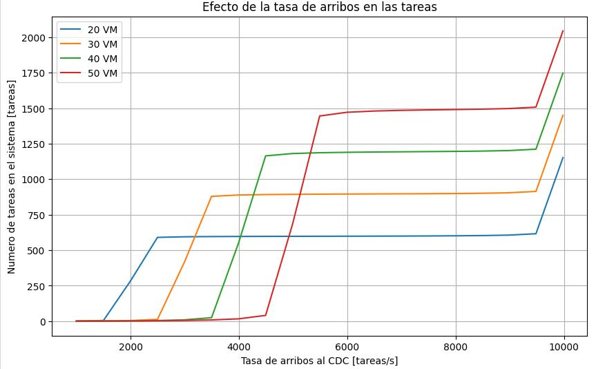
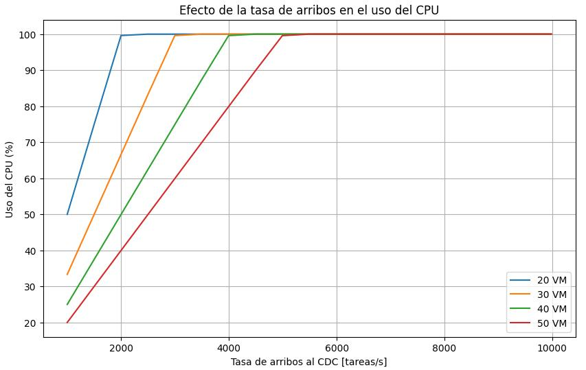

Marco teórico
En este trabajo se considera un modelo CDC que admite muchas máquinas virtuales en una máquina física (PM) y varios contenedores en una máquina virtual que refleja los escenarios de casos de uso reales en las plataformas de servicios en la nube actuales. Se asignan varios contenedores a una máquina virtual, mientras que a un PM se le pueden asignar varias máquinas virtuales a través de un hipervisor.
Un hypervisor, o monitor de máquina virtual (VMM), se usa popularmente para administrar todas las máquinas virtuales en un PM. La virtualización del servidor puede ejecutar toda la máquina virtual (es decir, ejecutar la máquina virtual, incluido su sistema operativo invitado, en otro sistema operativo host). Esta tecnología de virtualización puede garantizar un alto rendimiento, confiabilidad, confidencialidad y aislamiento de seguridad entre las instancias de VM. El aislamiento entre las máquinas virtuales es firme y una máquina virtual individual no tiene conocimiento de otras máquinas virtuales que se ejecutan en el mismo PM.

Un contenedor mantiene el aislamiento de un clúster de procesosS de los demás en un sistema operativo. Al usar, por ejemplo, namespaces de Linux, como se muestra en la figura 1, los contenedores proporcionan su vista privada adecuada del sistema operativo, las interfaces de red y el marco del sistema de archivos, que se usa en este documento. Las instancias de contenedor comparten el kernel. El sistema operativo con otros procesos del sistema y puede estar restringido hasta cierto punto para usar algunos recursos informáticos (CPU, RAM, etc .). De este modo, los contenedores en la nube proporcionan una capa de encapsulación relativamente delgada sobre cualquier aplicación alojada en ellos. En consecuencia, la implementación y la creación de instancias de contenedores son relativamente rápidas.
A pesar de los beneficios que ofrece la virtualización, para las aplicaciones que requieren una mayor flexibilidad en tiempo de ejecución y menos aislamiento, es posible que la virtualización basada en VM no satisfaga todo el conjunto de requisitos de QoS. A medida que la carga de trabajo se vuelve más dinámica y cambia con el tiempo, ha habido un creciente interés en la virtualización basada en contenedores, que facilita en gran medida el movimiento de aplicaciones de software entre arquitecturas en la nube en comparación con la virtualización basada en máquinas virtuales. De hecho, un operador se ejecuta en un kernel con un aislamiento de rendimiento similar al de las máquinas virtuales, pero sin la costosa sobrecarga de administración del tiempo de ejecución de la máquina virtual.
La contenedorización ofrece a las organizaciones y a los desarrolladores un entorno de programación eficiente con una inversión y un coste operativo minimizados. Los enfoques de contenedorización se desarrollan en base a la técnica de virtualización en la que los recursos de hardware se abstraen para facilitar el intercambio de recursos informáticos virtuales.
Sin embargo, los contenedores aportan muchos beneficios difíciles, sino imposibles, a tener con las máquinas virtuales.
En primer lugar, los contenedores comparten los recursos con el sistema host de forma mucho más eficiente que las máquinas virtuales. En segundo lugar, los contenedores pueden iniciarse y detenerse en pocos segundos. En tercer lugar, la portabilidad del contenedor elimina la guerra de dependencia entre sistemas y garantiza que funcionará independientemente del sistema anfitrión. En cuarto lugar, los contenedores son increíblemente ligeros, lo que permite a los usuarios ejecutar docenas (incluso más) de contenedores al mismo tiempo para simular un entorno de producción verdaderamente distribuido, lo que a menudo no es el caso de las máquinas virtuales. En quinto lugar, los clientes finales de las aplicaciones pueden descargar y luego ejecutar sus aplicaciones complejas rápidamente sin tener que pasar horas del dolor de instalación y configuración. Además, el objetivo principal de un contenedor es hacer que una aplicación sea completamente portátil y autónoma, a diferencia de las máquinas virtuales que apuntan a la virtualización total de un entorno externo.
Modelo propuesto en paper
A continuación, se hará una descripción de los diferentes modelos que se realizarán en la implementación del clúster. Cabe aclarar que esta se basa en el esquema teórico presentado en el paper “Dynamic Scalability Model for Containerized Cloud Services”.
El usuario final envía una solicitud de ejecución de tareas a través de un balanceador de carga. Este último se encargará de redirigir el tráfico recibido al PM de manera uniforme. Los requisitos de ejecución de tareas de diversos usuarios de la nube se almacenan en el búfer, que se adjunta a la cola de equilibrio de carga para la asignación de recursos virtuales en el sistema en la nube. Las solicitudes de tareas recibidas en cola se dirigen a uno de los PM en la nube.
Cada solicitud de ejecución de tarea se asignará a un contenedor único y cada solicitud de tarea se alojará en un contenedor diferente. En caso de solicitudes de tareas altas, se escalará verticalmente agregando un contenedor a la vez para ejecutar las tareas.
Para modelar el CDC, usamos una red de colas abierta de Jackson, como se muestra en la Figura 2. Se supone que todos los MP de los CDC son idénticos y que las solicitudes de usuario en cada cola de cualquier nodo de los CDC adoptan una política FIFO (primero en entrar, primero en salir). Una vez finalizado el servicio, las solicitudes salen del PM y salen del sistema. En este documento, consideramos una solicitud de usuario como una unidad de cálculo mínima (tarea) en el CDC y solo se puede ejecutar en un contenedor.

A continuación, se muestran las gráficas del paper. Ahora, veremos las figuras obtenidas y analizaremos lo que se puede observar de ellas, comparandolas con las del paper. Cabe mencionar que el numero de figura se corresponde con la misma numeración que el práctico.
Figura 4 (Nro. de figura correspondiente al paper)

Es evidente que a medida que aumenta la tasa de llegada global de tareas, el tiempo de respuesta aumenta. Además, se puede notar que para las cuatro configuraciones, el sistema en la nube no presenta un cambio radical cuando la tasa de llegada global de tareas se encuentra entre 5500 y 9500 tareas por segundo. Sin embargo, cuando superamos las 9500 tareas por segundo, el tiempo de respuesta del sistema cambia de manera exponencial para los cuatro casos, y a medida que disminuye el número de instancias de contenedores, el tiempo de respuesta del sistema aumenta y alcanza 0.4 segundos a una tasa de llegada global de 10000 tareas por segundo en el caso de la primera configuración.
Figura 5

La Figura 5 muestra la tasa de abandono del sistema, en la cual las tareas pueden ser rechazadas debido a la falta de capacidad en la plataforma del CDC o la falta de espacio en las colas de LRS. El conteo de tareas abandonadas sigue aumentando con el aumento de la tasa de llegada de tareas por segundo. Por lo tanto, si hay una carga excesiva, puede haber un retraso que provoca que algunas tareas sean abandonadas. Es evidente que a medida que aumenta el número de instancias de contenedores, la tasa de abandono del sistema disminuye.
Figura 6

La Figura 6 resume los resultados de nuestro modelo probado, informando sobre el rendimiento alcanzado en relación con la tasa de envío de tareas deseada, utilizando las cuatro configuraciones. El número de instancias de contenedores asignadas afecta el rendimiento del sistema.
Figura 7

La Figura 7 muestra el efecto del número de instancias de contenedores en el número de tareas en el CDC cuando se varía la tasa global de llegada. Es evidente que cuando se trabaja con un mayor número de contenedores (la cuarta configuración) y la tasa de llegada global no supera las 5000 tareas por segundo, el CDC puede procesar más tareas, lo que permite reducir el número de tareas en el CDC. En el caso de que la tasa de llegada global supere las 5000 tareas por segundo, el CDC con un mayor número de contenedores presenta una gran cantidad de tareas en el CDC. Esto se explica en los resultados de la simulación obtenidos en las Figuras 5 y 8. Cuando la utilización de la CPU es igual al 100% y el CDC contiene el mayor número de contenedores, la tasa de abandono de tareas del CDC disminuye en comparación con el CDC con menos contenedores (otras configuraciones). Las mismas observaciones se aplican a las otras cuatro configuraciones.
Figura 8

Como podemos ver en la Figura 8, para una tasa de llegada global de más de 2000 tareas por segundo, puede notarse que cuando usamos la primera configuración, podemos tener una violación de los requisitos de SLA (Acuerdos de nivel de servicio). Por otro lado, para una tasa de llegada global de 2000 tareas por segundo y menos, y cuando tenemos la cuarta configuración, se garantiza el cumplimiento de los requisitos de SLA. Por lo tanto, el número de instancias de contenedores en el CDC tiene un impacto en la medida de la utilización de la CPU.
Una vez visto y analizado la situación propuesta por el paper, pasamos a nuestra implementación.
Implementación
En la siguiente imagen se muestra el esquema completo del sistema a realizar donde pueden observarse los 3 subsistemas que componen el clúster:

Por otro lado, se realizó un codigo en Python para poder simular las mismas situaciones que se plantearon en el paper. Se encuentra en el siguiente link de GitHub: Script_Python
Además, se comparan diferencias entre el documento de referencia y la práctica.
Generador de tráfico
Para simular el tráfico se realizó un script en Python que permite seleccionar la cantidad de usuarios y la tasa de arribo de cada usuario en particular, es decir, que la tasa de arribo total es el producto entre ambos parámetros.
Dada la lógica del generador, existe una particularidad a tener en cuenta: la tasa de arribo por usuario obtenida será menor a la seleccionada. Esto se da porque además de esperar el tiempo requerido por la función de variable de distribución exponencial también se incluye el tiempo de respuesta del servidor. Esto es que un usuario espera la respuesta del servidor para generar una nueva petición. Este efecto desaparece cuando el tiempo medio de interarribo por usuario es considerablemente más grande que el tiempo medio de respuesta del servidor.
Balanceador de carga
Para dar cabida a todas las solicitudes de tareas entrantes y a la capacidad casi infinita en la nube, modelamos y aproximamos el equilibrador de carga como un modelo de cola M/M/1 con un búfer de solicitud de tareas de capacidad infinita y llegada de una sola solicitud de tarea.
Las llegadas de solicitudes de tareas se producen a la tasa "lambda" según un proceso de Poisson, donde las duraciones entre llegadas entre solicitudes sucesivas de tareas que llegan suelen ser independientes y se distribuyen exponencialmente con una tasa de 1/lambda.
Los tiempos de servicio en el servidor del equilibrador de carga se distribuyen exponencialmente con el parámetro de velocidad "mu" , donde 1/mu es el tiempo medio de servicio.
En la práctica, la primera “M” corresponde al proceso de arribo, el cual es posible gobernar debido a que se puede regular el tiempo de interarribo en el programa de Python realizado en el cliente. Respecto de la segunda “M” define proceso de servicio, también con distribución exponencial, en la implementación a realizar no se tiene certeza sobre qué distribución se tiene, ya que depende del servicio de Haproxy en el cual nuestra capacidad de modificación es limitada. En la implementación, se podría considerar determinístico, ya que la acción a realizar es prácticamente igual para todas las tareas, Haproxy modifica el stack de protocolos (capa 2, capa 3 y capa 4) y redistribuye de manera equitativa entre todas las máquinas físicas mediante la aplicación del algoritmo de Round Robin, si se consideran pequeñas variaciones en este tiempo de servicio también podría modelarse con una distribución normal. En el caso de nuestra implementación solo se tiene una PM. Por último se considera que la cola de haproxy es suficientemente grande como para considerarla infinita a los fines del trabajo.

Nodos
En esta etapa el proceso de arribo también se caracteriza con “M” donde la nueva tasa es igual a la tasa de arribo total dividida la cantidad de worker nodes. En cuanto al proceso de servicio, se tiene un caso similar al de haproxy donde es difícil determinar qué distribución gobierna este proceso.
Por último es necesario hacer la aclaración de que al definir la capacidad del sistema “C” , Kubernetes no gestiona colas de tareas, por lo que a priori C=1. Si bien esto llevaría a un sistema a pura pérdida en cada nodo, en el comportamiento que se observa no existe pérdida. Esto es por la acción del protocolo TCP sobre el que se monta HTTP que al estar orientado a la conexión garantiza la transmisión de las tareas a costa de una latencia mayor. Esto lo logra con diferentes herramientas como el control de ventana y la retransmisión, pudiendo generar colas tanto en el cliente como en el host del servidor.

Pods/Contenedores
En relación al modelo adoptado para los pods y contenedores, en nuestro esquema práctico se representa de igual manera que en el documento de referencia. La primera letra de la notación de Kendall, la “M”, es la tasa de arribo dada por el lambda del modelo anterior dividido el numero de contenedores, por lo que es posible gobernarla. Por otro lado, la letra siguiente es una “M” también, ya que depende de la tasa de servicio en el programa realizado para el servidor con FastApi, por lo que también es posible modificarla. Con relacion a la cantidad de servidores, en este caso se tienen “k” de los mismos ya que depende del número de contenedores. La cuarta letra demuestra la capacidad del sistema y de igual manera que antes es “k”, generando un sistema a pura pérdida. Las tareas no se encolan, se pierden. Un contenedor puede atender solo una tarea.

Con todos estos detalles en cuenta el sistema completo también puede modelarse como M/M/1 pero en este caso la tasa de servicio de todo el sistema será la de un pod en particular definida como 100 r/s por la cantidad de pods.